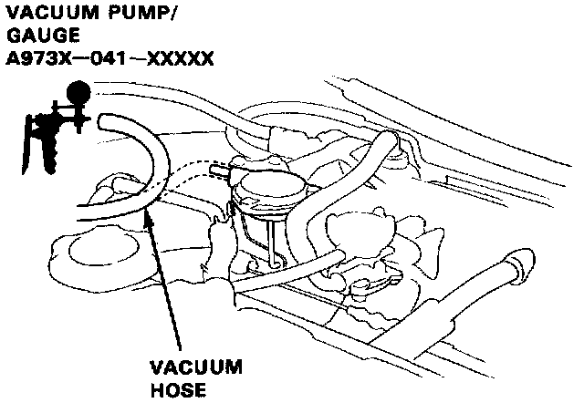
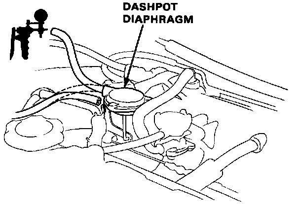

Throttle Control System

Throttle Control System Testing
1. Disconnect vacuum hose from the dashpot diaphragm, and connect vacuum pump to the hose.
2. Apply vacuum and check that vacuum rises, then bleeds off to zero.
- If the vacuum holds or does not rise and bleed off, replace the dashpot check valve and retest.

3. Connect a vacuum pump to the dashpot diaphragm.
4. Apply the vacuum and check that the rod pulls in and vacuum holds.
- If the vacuum does not hold or the rod does not move, replace the dashpot diaphragm, and retest.